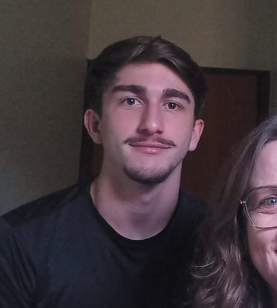

Nosso Time
👥 Integrantes

Sobre Nós
Somos um grupo de estudantes interessados por tecnologia e comprometidos com a sustentabilidade. Acreditamos que, com inovação e conscientização, podemos fazer a diferença no mundo.
O Aqua Alert nasceu da ideia de unir tecnologia e sustentabilidade para enfrentar um dos maiores desafios do mundo moderno: o desperdício de água.
Nosso sistema utiliza um medidor de vazão conectado a um ESP32, que envia os dados para um banco de dados online. O usuário poderá acessar um site intuitivo e acompanhar seu consumo diário, semanal e mensal, recebendo também alertas de possíveis vazamentos e dicas para economizar água.
🌱 Nossos Valores
Sustentabilidade
Cada gota conta.
Inovação
Tecnologia a favor do meio ambiente.
Conscientização
Informação para transformar hábitos.
Responsabilidade
Cuidar hoje para garantir o amanhã.
🚀 Nossa Missão
Promover o uso consciente da água, ajudando pessoas e famílias a reduzir desperdícios e a adotar hábitos mais sustentáveis no dia a dia.
👁 Nossa Visão
Ser referência em soluções acessíveis de monitoramento ambiental, incentivando uma sociedade mais consciente e responsável com os recursos naturais.